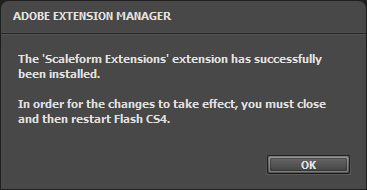
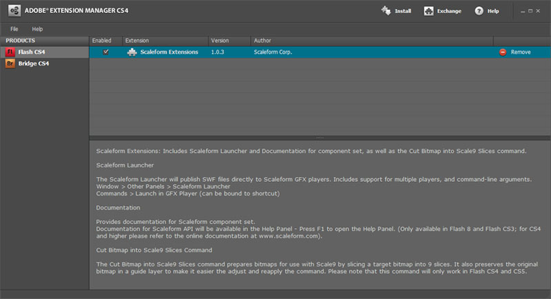
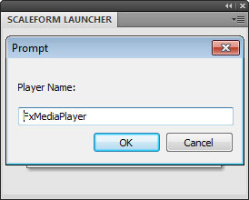
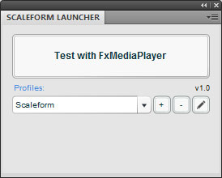
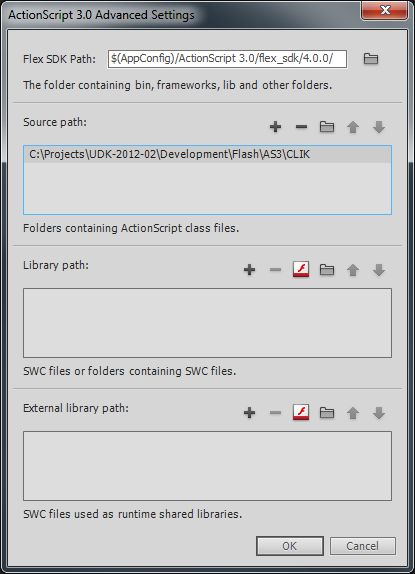

UDN
Search public documentation:
SettingUpScaleformGFxCH
English Translation
日本語訳
한국어
Interested in the Unreal Engine?
Visit the Unreal Technology site.
Looking for jobs and company info?
Check out the Epic games site.
Questions about support via UDN?
Contact the UDN Staff
日本語訳
한국어
Interested in the Unreal Engine?
Visit the Unreal Technology site.
Looking for jobs and company info?
Check out the Epic games site.
Questions about support via UDN?
Contact the UDN Staff
设置 Scaleform GFx
Scaleform GFx Launcher
安装 Scaleform GFx Launcher
请按照下面的标准流程安装 Scaleform GFx launcher 进行虚幻引擎 3 开发：- 在 Adobe Flash 专业版中，进入 Help（帮助） > Manage Extensions（管理插件） 运行 Adobe Extension Manager。
- 在 Launcher 的右上角，点击 Install（安装） 按钮。
- 在打开的文件浏览器中，浏览到
[UE3Directory]\Binaries\GFx\CLIK Tools. 并选择Scaleform CLIK.mxp文件。
- 您将需要在打开的对话框上统一这个协议。

- 然后将会出现一个对话框，显示安装成功。

- Scaleform GFx Launcher 现在显示在 Adobe Extension Manager 对话框中。

- 重新启动Adobe Flash Professional CS4，关闭Extension Manager(插件管理器)。
- 导航到Window(窗口) > Other Panels(其它面板)，选择Scaleform Launcher。

- 现在会显示 Scaleform Launcher 面板。

设置Scaleform GFx Launcher(启动器)
需要设置Scaleform Launcher指向 GFx 播放器，以便可以在Adobe Flash Professional中访问并预览CLIK控件及它们的功能。- 点击 按钮，添加一个新的 Profile（概要文件）。

- 需要引用 GFx 播放器。点击 按钮，添加一个播放器。
- 浏览至
[UE3Directory]\Binaries\GFx。 - 选择
FxMediaPlayer.exe。*注意* ： 如果警告您说脚本运行得很慢，请选择 NO（否） 。这是已知问题，Scaleform 将会在以后的版本中修复这个问题。 - 将这个播放器命名为 FxMediaPlayer 。

- 您可以使用 Profile Name（概要文件名称） 字段命名这个概要文件。

您还可以创建另一个概要文件，如果您愿意它可以使用FxMediaPlayerNoDebug.exe 播放器。这个播放器将不会在控制台中报告实例的加载情况，而仅是在您的ActionScript中产生跟踪命令。
设置其他概要文件进行分屏预览
要想精确地针对标准清晰度和分割屏幕分辨率来测试UI的位置和缩放比例，那么您可以给予之前的步骤设置多个profiles（信息）来让GFx播放器预览窗口以指定的分辨率启动。- 只要您完成了设置播放器后，在 Scaleform Launcher 面板中点击 按钮。
- 将这个概要文件命名为 SD 。
- 在命令参数文本字段中，在
%SWF PATH%后添加-res 960:720文本。 - 点击 OK（确定） 保存。
- 注意 在您点击 Launch（启动）后，视频将会根据视窗大小进行缩放。在键盘上按下 Ctrl + D 使其与播放器相适应。
安装 CLIK 数据库
ActionScript 2 / Scaleform 3
- 在 Adobe Flash Professional CS4中，选择 Edit(编辑) > Preferences(参数选择)
- 选择 ActionScript 。
- 点击
 按钮。
按钮。
- 使用
 按钮添加一个新项。
按钮添加一个新项。
- 设置路径为CLIK 目录（例如：
[UE3Directory]\Development\Flash\AS2\CLIK）。 -
 请确保您添加的路径是从上面数第二个(参照下面的图片)！
请确保您添加的路径是从上面数第二个(参照下面的图片)！

ActionScript 3 / Scaleform 4
- 在 Adobe Flash Professional CS5.5中，选择 Edit(编辑) > Preferences(参数选择)
- 选择 ActionScript 。
- 点击 按钮。
- 在 Source path（源代码路径） 项中使用 按钮添加一个新条目。
- 设置路径为CLIK目录（例如：
[UE3Directory]\Development\Flash\AS3\CLIK）- 如下。
